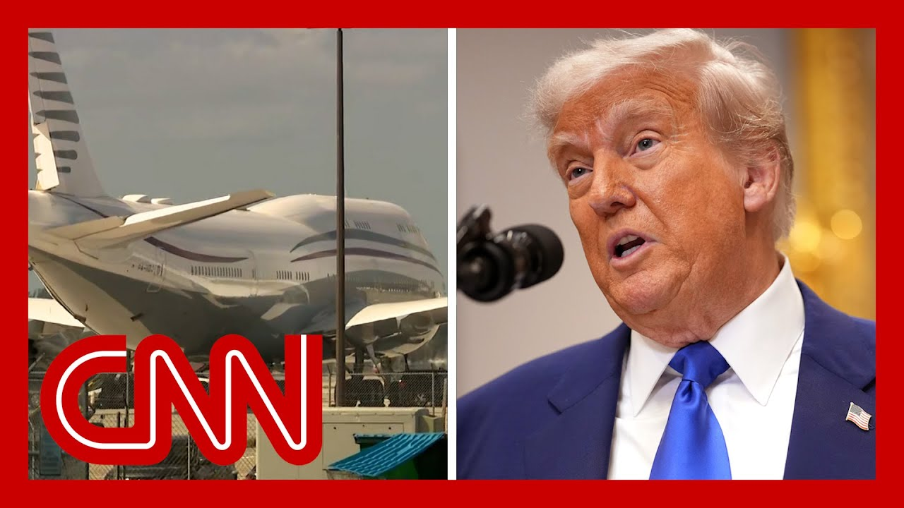

【特朗普为接受卡塔尔飞机计划辩护】
Summary: Summary:
摘要： Trump defends accepting a $400 million luxury jet from Qatar, citing delays in Boeing's Air Force One production and the outdated current plane. He views Qatar's offer as a gesture of goodwill due to longstanding U.S. support, while critics call it unconstitutional corruption.

⏱️ Estimated Reading Time: 14 min
Has Qatar asked for anything in exchange for that $400 million luxury jumbo jet?
特朗普为接受卡塔尔4亿美元豪华飞机辩护，理由是美国空军一号建造延误及现有飞机老旧。他认为卡塔尔的提议是出于美国长期支持的善意，而批评者称此举违宪且腐败。
And how can the American people be so sure that they will not in the future?
卡塔尔是否要求以这架4亿美元的豪华巨型喷气式飞机作为交换条件？
Well, I think what happens with the plane is that, you know, we're very disappointed that it's taking Boeing so long to build a new Air Force One.
美国人民如何确信未来不会有任何交换条件？
You know, we have an Air Force One that's 40 years old.
我认为关于这架飞机的情况是，我们对波音公司建造新空军一号的拖延感到非常失望。
And if you take a look at that, compared to the new plane of the equivalent, you know, stature at the time, it's not even the same ballgame.
我们现有的空军一号已经使用了40年。
You look at some of the, Arab countries and the planes they have parked alongside of the United States of America plane.
如果你对比一下当时同等规格的新飞机，它们根本不在一个水平上。
It's like from a different planet, and it's a close to 40 years old.
你看看一些阿拉伯国家的飞机，它们停在美国飞机旁边。
Might be more than 40 years old now.
它们就像来自另一个星球，而我们的飞机已经快40年了。
And we, when I first came in, I signed an order to get it built.
现在可能已经超过40年了。
I took it over from the Obama administration.
我上任时签署了建造新飞机的命令。
they had originally agreed.
我从奥巴马政府接手了这项工作。
I got the price down much lower.
他们最初同意了。
and then, when the election didn't exactly work out the way that it should have.
我把价格压得更低。
a lot of work was not done on the plane because a lot of people didn't know they made change orders.
然后，选举结果不如预期。
That was so stupid, so ridiculous.
飞机的许多工作未完成，因为很多人不知道他们修改了订单。
And it ended up being a total mess, a real mess.
这太愚蠢、太荒谬了。
And when I came back, I said, by the way, what's going on with the, the Boeings that are coming in?
最终一团糟，彻底混乱。
Well, sir, they're way behind.
我回来后问，那些波音飞机进展如何？
And they are.
先生，它们远远落后于计划。
They're way behind.
确实如此。
They were way behind.
它们远远落后。
Another mess that I inherited from Biden.
它们之前就落后了。
And, it's going to be a while before we get them.
这是我从拜登那里继承的又一个烂摊子。
And I think Qatar, who, has really we've helped them a lot over the years in terms of security and safety.
我们还需要一段时间才能拿到新飞机。
I felt they I think they and very, very nicely and I have a lot of respect for the leadership for the leader Qatar.
我认为卡塔尔这些年在安全方面得到了我们很多帮助。
And I think they very they knew about it because they buy Boeing's, they buy a lot of Boeing's, and they knew about it.
我觉得他们非常友好，我非常尊重卡塔尔的领导层。
And they said we would like to do something.
他们知道这件事，因为他们购买波音飞机，买了很多。
And if we can get a 747 as a contribution to our Defense Department, to use during a couple of years while they're building the other ones.
他们表示愿意做点什么。
I think that was a very nice gesture.
如果我们能获得一架747作为国防部的捐赠，在建造新飞机期间使用几年。
Now, I could be a stupid person to say, oh, no, we don't want a free plane.
我认为这是非常友好的姿态。
We give free things that will take one, two, and it helps us out.
如果我说“不，我们不要免费飞机”，那我就是愚蠢的。
because again, we're talking about we have 40 year old aircraft.
我们接受这份礼物，它能帮我们渡过难关。
The money we spend, the maintenance we spend on those planes to keep them tippy top is astronomical.
因为我们现有的飞机已经40年了。
You wouldn't even believe it.
我们为维护这些飞机花费的天文数字。
So I think it's a great gesture from Qatar.
你甚至无法相信。
I appreciate it very much.
所以我认为卡塔尔的举动很棒。
I would never be one to turn down that kind of an offer.
我非常感激。
I mean, I could be a stupid person.
我绝不会拒绝这样的提议。
Say, no, we don't want a free, very expensive airplane.
否则我就是愚蠢的。
but it was.
说“不，我们不要免费的昂贵飞机”。
I thought it was a great gesture.
但事实如此。
And I think it was a gesture because of the fact that we have helped and continue to.
我认为这是非常友好的姿态。
We will we will continue to, all of those countries Saudi Arabia, UAE, Qatar and others, we keep them safe.
我认为这是因为我们过去和现在都在帮助他们。
If it wasn't for us, they probably wouldn't exist right now.
我们将继续保护沙特、阿联酋、卡塔尔等国的安全。
And I think this was just a gesture of good faith.
如果没有我们，它们可能现在就不存在了。
And, I don't get it.
我认为这只是善意的表示。
Someday it will be like Ronald Reagan.
我不明白。
They decommission them, you know, they get to a certain age, they decommission them.
有一天它会像里根总统的飞机一样。
it'll go to my library.
它们到了一定年限就会被退役。
They're talking about going to my library, in years out.
它会进入我的图书馆。
But I thought it was a great gesture.
他们讨论过几年后把它放进我的图书馆。
And it's something that was done by Ronald Reagan.
但我认为这是非常友好的姿态。
They actually decommissioned the plane, and he put it in his library, and it actually has made the library, I think, a Boeing 707.
里根总统也做过类似的事。
it's actually made the library, more successful.
他们退役了飞机，放进他的图书馆，那是一架波音707。
So it was good to use.
这实际上让图书馆更受欢迎。
Do you plan to use the plane after you leave office?
所以这是好事。
No, I don't know.
你离任后会使用这架飞机吗？
It would it would go directly to the library after.
不，我不知道。
After I leave office, I would I wouldn't be using it.
它会直接进入图书馆。
Congressman, apparently the U.S. and cutter are working out the final details of a gift, a big gift, a giant luxury 747 aircraft that President Trump is reportedly going to accept in the military is going to convert into being able to use as Air Force One, and then it may end up at the Trump Presidential Library after he leaves office.
离任后我不会使用它。
How do you feel about this gift?
议员先生，据悉美国和卡塔尔正在敲定一份大礼的最终细节——一架巨型豪华747飞机，特朗普总统将接受并由军方改装为空军一号，最终可能进入特朗普总统图书馆。
And let it is, brazen corruption, a violation of the Constitution, the foreign emoluments clause.
你对这份礼物有何看法？
It is a gift from a foreign government that is expressly not permitted under the Constitution and given that Donald Trump, as we know, is purely transactional, this gift which ultimately will go to him, it's not for the United States.
这是无耻的腐败，违反宪法中的外国薪酬条款。
of course, curries favor with him.
这是宪法明确禁止的外国政府礼物，而众所周知特朗普纯粹是交易性的，这份礼物最终归他个人所有，而非美国。
And perhaps there is not a specific official act that he has taken in return for that payment, such that our current state of public corruption law would not apply.
当然是为了讨好他。
and of course, he's he's immune because the Supreme Court has given him criminal immunity.
或许他没有为此采取具体官方行动，因此现行公共腐败法律不适用。
But this is just the latest reflection of an egregious, corrupt presidency that is using the office of the presidency for his personal gain.
当然，他拥有最高法院赋予的刑事豁免权。
this is the the latest one 400 million, $2 billion crypto deal where Donald Trump himself is, is is prepped to make, tens or hundreds of millions of dollars from it, from a foreign country backed deal.
但这只是他利用总统职位谋取私利的又一例证。
this is beyond anything that we've ever seen.
这是最新的4亿美元加密货币交易，特朗普本人可能从中获利数千万甚至数亿，且由外国支持。
And the fact that from my vantage point, John, as a former, ten year DOJ career prosecutor, to see that the attorney general has signed off on this on one of the most pathetic and weak, legal analyzes I've ever seen, just underscores how far down the Department of Justice has fallen.
这是我们前所未见的。
and how much in trouble we are that Donald Trump has really just remade our government for his own personal interest.
作为前司法部十年检察官，看到总检察长批准了我见过的最可悲、最无力的法律分析，这凸显了司法部的堕落。
Can I put can we put that true social post back up on the screen here so I can read it to the congressman in case he hasn't seen it yet, because the president seems to be responding to the type of criticism that you're making here, he says.
特朗普为个人利益重塑政府，我们处境堪忧。
So the fact that the Defense Department is getting a gift free of charge and gift free of charge is all capitalized of a 747 aircraft to replace the 40 year old Air Force One temporarily in a very public and and transparent transaction, so bothers the crooked Democrats that they insist we pay top dollar for the plane.
能否把那条真实社交帖放回屏幕？总统似乎在回应你的批评。
Any buddy can do that.
国防部免费获得一架747飞机，临时替换老旧的空军一号，这一公开透明的交易让腐败的民主党人不满，坚持要我们高价购买。
The Dems are world class losers.
谁都能这么做。
MAGA so that's what the president's your response?
民主党人是世界级输家。
it's laughable at this point.
“让美国再次伟大”——这就是总统的回应？
First of all, temporarily is, a key word there because ultimately it will go to Donald Trump.
这太可笑了。
But this is not Democrats opposing, what was a what's a great deal.
“临时”是关键，因为最终飞机会归特朗普所有。
This is just people following the Constitution.
这不是民主党反对划算的交易。
There is a reason that it says in the Constitution that no president can accept a gift from a foreign government, because we want to be sure that the president of the United States is always acting in the interests, sole interest of the United States, and not on behalf of a foreign country.
这只是遵守宪法。
Well, if Qatar is giving him a $400 million gift now, who knows what else they're going to give him?
宪法规定总统不得接受外国政府礼物，是为了确保总统只代表美国利益。
And there's no question that his, view of Qatar and the Middle East, with UAE now backing his own crypto deal that is shaded and we're left here to wonder, well, is he doing this because he got $400 million gold Palace?
如果卡塔尔现在送他4亿美元礼物，谁知道未来还会送什么？
Or is he doing this because it's in the best interest of the United States?
阿联酋支持他的加密货币交易，让人怀疑他是否因获得4亿美元“金宫”而偏袒卡塔尔和中东。
That's the point of the Foreign Emoluments Clause is to ensure that there's no question.
还是因为这符合美国最大利益？
And so he can try to explain it away as some deal.
外国薪酬条款就是为了消除这种疑问。
Oh, I got such a great deal.
他可以辩解这是一笔交易。
It's a gift. I don't have to pay for it.
“我谈成了好交易。”
But the United States government is not a real estate company.
“这是礼物，我不必付钱。”
we are much, much bigger than that, much more important than that.
但美国政府不是房地产公司。
And many more other considerations, including geo political, that Donald Trump just doesn't understand and is really jeopardizing our legitimacy worldwide and is clearly using this office, for pure corruption.
我们远比这更重要。
Do you think that he is violating the Constitution with this?
特朗普不懂地缘政治等考量，损害我们在全球的合法性，纯粹利用职位腐败。
And will your committee, the Judiciary Committee, be overseeing this investigating it?
你认为他此举违宪吗？
Look, the Republicans control the Senate, and so we will have a hard time, getting the majority on the Judiciary Committee to agree that we should be investigating whether this is a violation of a clause of the Constitution that says we should not accept gifts from foreign, princes, kings and potentates and the Emoluments Clause.
司法委员会会调查吗？
This is almost exactly the sort of gift that our founders had in mind, that Americans shouldn't accept.
共和党控制参议院，我们很难让司法委员会多数同意调查这种违宪行为。
And I'll remind you other federal employees can't accept even $50.
这正是建国者设想美国人不应接受的礼物。
they can't accept anything from a foreign agent of a foreign country, but they can't accept anything worth more than $50, from a lobbyist or from an American, let alone $400 million.
其他联邦雇员甚至不能接受50美元。
And the details of this deal are not transparent as it's been reported.
他们不能接受外国代理人或说客超过50美元的礼物，更别说4亿美元。
The intention is to give it not just for the president's use while he's president, but then to his future library so that he can continue to fly around in this plane.
这笔交易的细节并不透明。
It's apparently a luxurious modern.
意图不仅是让总统在任时使用，还包括未来图书馆，让他继续乘坐。
747 but the president of the United States already has two versions of Air Force One, which has important national security features to defend the plane against attack, to be able to manage our global military in the event of a crisis.
这显然是一架豪华现代飞机。
And there's no way to guarantee that this plane, even though Qatar is a trusted partner and ally, there's no way to guarantee this plane doesn't have, devices embedded within it that might compromise our security.
但总统已有两架空军一号，具备重要国家安全功能。